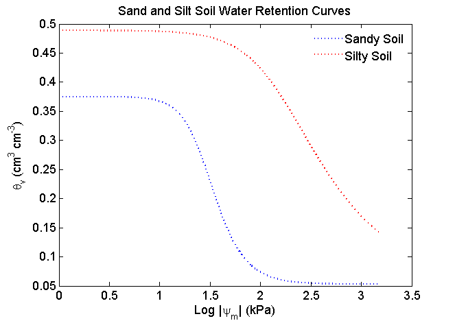
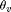
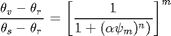

SWRCFUN
Calculates matric potential or volumetric water content using a soil water retention model.
Contents
Syntax
[Output] = SWRCfun (texturalClass,variableName,variableValue)
[Output] = SWRCfun (texturalClass,variableName,variableValue) calculates either the matric potential or the volumetric water content of a user-defined soil textural class. Output.h or Output.theta (see below for more details) is a vector with the same length as variableValue.
Inputs
texturalClass = String indicating one of the 12 soil textural classes defined by the USDA.
variableName = String indicating the values in variableValue.
variableName can be either 'matric' or 'theta'. variableValue = vector with values corresponding to variableName.
volumetric water content must be in cm3/cm3.
matric potential must be in kPa.Output
Output = Possible outputs are Output.h (matric potential) when variableName
is 'volumetric' and variableValue consists of volumetric water content.
Another alternative is Output.theta when the input data is the matric potential.
Output is a structure.Examples
An example of calculating the volumetric water content given the matric potential for a sand and silt soils is presented below.
[Sand] = SWRCfun ('sand', 'matric',1:1500);
[Silt] = SWRCfun ('silt', 'matric',1:1500);
plot(log10(1:1500),Sand.theta_v,':b',log10(1:1500),Silt.theta_v,':r','LineWidth',2);
title('Sand and Silt Soil Water Retention Curves','FontSize',13)
xlabel('Log |\psi_m| (kPa)','FontSize',13)
ylabel('\theta_v (cm^3 cm^{-3})','FontSize',13)
legend ('Sandy Soil', 'Silty Soil')
legend boxoff
set(gca,'FontSize',13')
In order to calculate the matric potential of a soil textural class given some volumetric water content values:
[Sand] = SWRCfun ('sand', 'theta', 0.150:0.001:0.450);Notice that both examples have the same structure name "Sand". However, the fields within the strucutre are different. The first example will result in Sand.h, and the second example in Sand.theta.
See also
References
van Genuchten, M. Th. 1980. A Closed-form Equation for Predicting the Hydraulic Conductivity of Unsaturated Soils. Soil Sci.Soc. Am. J. 44(5)892-898
https://dl.sciencesocieties.org/publications/sssaj/abstracts/44/5/SS0440050892
Updates
v.1 Created by AP Monday, September 23, ?2013.
Last revised on 10-Dec-2013 16:41:19
Soil water retention model
To calculate volumetric water content () given the soil matric potential the model is:

Check input
if ~isvector(variableValue) error('variableValue must be a vector') end % Retrieve vG parameters for the selected textural class [~, theta_r, theta_s, alpha, n, m] = rosetta (texturalClass); %Calculate theta_v or matric potential (h) according to user specification. if strcmpi(variableName,'matric') % If input was matric potential then the function will calculate theta_v. Output.theta = theta_r + (theta_s-theta_r)./(1+(alpha*variableValue).^n).^m; elseif strcmpi(variableName,'theta') % If inputs was theta_v, then the output will be the matric potential. Output.h = ( ( ( ( (variableValue-theta_r)/(theta_s-theta_r) ).^(-1/m) )-1).^ (1/n) ) / alpha; else error('Please type a valid variableName'); % If the input "variableName" does not match % one of the categories before, it will return an error message. end
Copyright 2013 This function is part of the Soil Physics Toolbox created by the Soil Physics team at the Plant and Soil Sciences Department, Oklahoma State University.